Opquast - la qualité web qui se vérifie
Présentation Miweb du 8 septembre 2026. Les transcriptions et le discours oral accompagnent chaque slide.
Présentation Opquast - 44 slides
Slide 1 sur 44 - Opquast, la qualité web qui se vérifie
Slide 1 - Opquast, la qualité web qui se vérifie
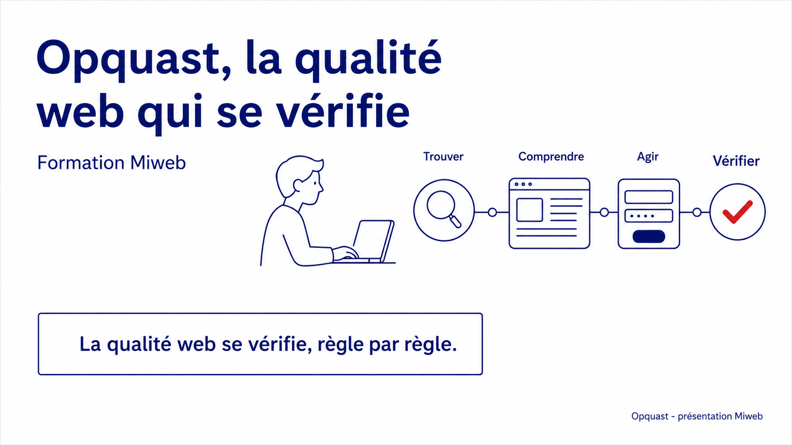
Lecture du visuel
Une personne utilise un ordinateur. Une chaîne relie une recherche, une page web, un formulaire et une coche de contrôle. Elle suit quatre étapes : trouver, comprendre, agir, vérifier.
Cadre de la présentation
Formation Miweb
Les quatre étapes du parcours
- Trouver
- Comprendre
- Agir
- Vérifier
Message à retenir
La qualité web se vérifie, règle par règle.
Présenter le sujet
Annoncer 45 minutes
Slide 2 - V4 vers V5 : le référentiel se met à jour
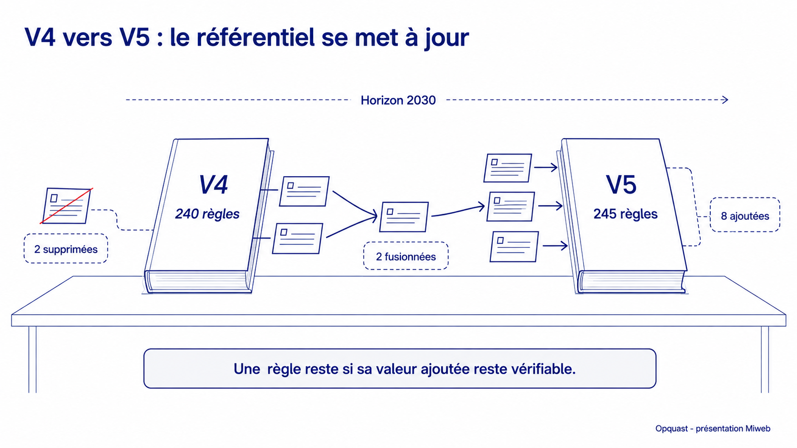
Lecture du visuel
Deux livres représentent les versions V4 et V5. Entre eux, le schéma distingue les suppressions, la fusion et les ajouts de règles.
Horizon de la mise à jour
Horizon 2030
Du référentiel V4 au référentiel V5
| Version | Nombre de règles |
|---|---|
| V4 | 240 règles |
| V5 | 245 règles |
Évolution des règles
- 2 supprimées
- 2 fusionnées
- 8 ajoutées
Message à retenir
Une règle reste si sa valeur ajoutée reste vérifiable.
La durabilité ne signifie pas la conservation automatique.
L’atelier V5 demande notamment si une règle restera valable jusqu’à l’horizon 2030.
Les règles peuvent donc être retirées lorsqu’elles ont perdu leur valeur ajoutée, regroupées si elles sont redondantes, ou ajoutées lorsqu’un besoin précis le justifie.
SMART
spécificité,
mesurabilité reproductible,
faisabilité,
pertinence et durabilité.
Slide 3 - Chacun fait bien son travail, et le site reste médiocre
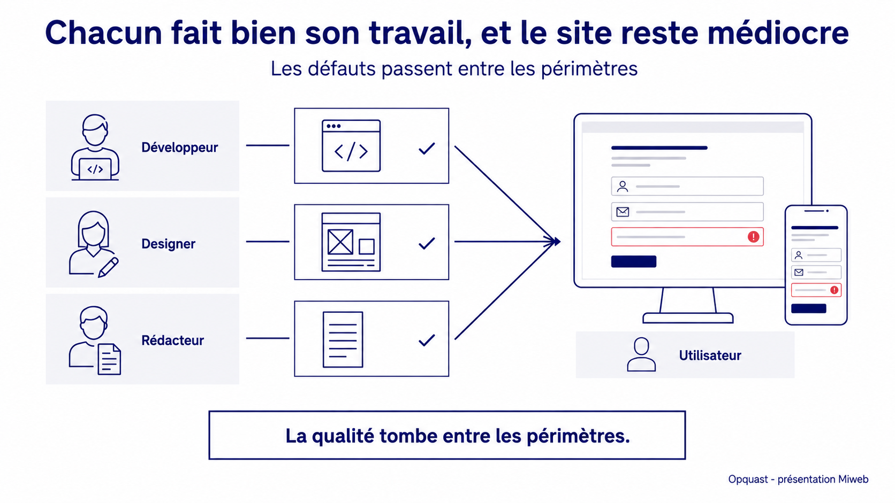
Lecture du visuel
Les contributions du développeur, du designer et du rédacteur convergent vers un même formulaire, affiché sur ordinateur et téléphone.
Le constat
Les défauts passent entre les périmètres
Les trois métiers représentés
- Développeur
- Designer
- Rédacteur
Côté utilisateur
Le formulaire affiche une erreur malgré les trois livrables validés.
Message à retenir
La qualité tombe entre les périmètres.
Le développeur livre du code propre.
Le designer livre des maquettes soignées.
Le rédacteur livre des textes justes.
Et pourtant l'utilisateur ne trouve pas le numéro de téléphone, le formulaire refuse sa saisie sans dire pourquoi, la page se lit mal sur son téléphone.
La qualité web ne tombe dans le périmètre de personne en particulier.
Elle tombe entre les périmètres.
Demander à main levée qui a déjà vu un formulaire rejeter une saisie sans expliquer pourquoi.
Slide 4 - Ce qu’on croit déjà couvrir
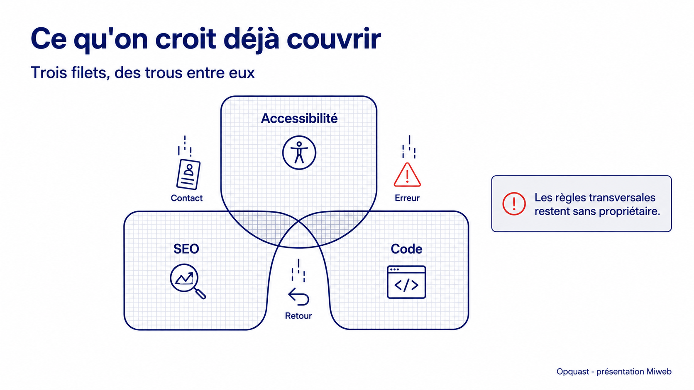
Lecture du visuel
Trois filets se recouvrent partiellement. Des éléments passent par les espaces laissés entre eux ; un encart signale les règles transversales sans propriétaire.
Le constat
Trois filets, des trous entre eux
Les trois filets de contrôle
- Accessibilité
- SEO
- Code
Les éléments qui passent entre les filets
- Contact
- Erreur
- Retour
Message à retenir
Les règles transversales restent sans propriétaire.
Une équipe outillée a souvent trois filets :
un audit d'accessibilité, souvent ponctuel et souvent en fin de projet ;
des bonnes pratiques de référencement, portées par un seul métier ;
une revue de code, qui regarde la forme du code plus que l'usage.
Ces filets se recouvrent mal. Entre eux passent les règles qui n'appartiennent à aucun métier :
l'adresse de contact joignable,
la politique de retour lisible
et le message d'erreur compréhensible.
Préciser que ces pratiques ne sont pas mauvaises, mais qu'elles laissent des trous.
Slide 5 - Opquast, ce que c’est et ce que ce n’est pas
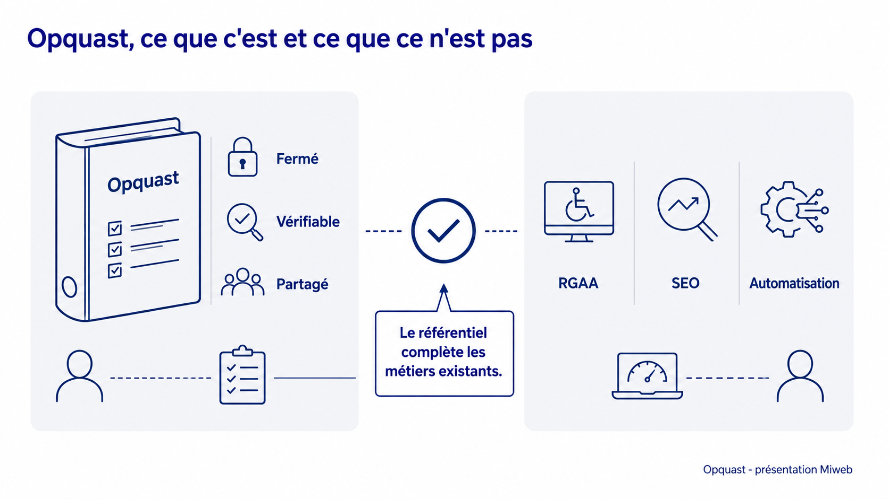
Lecture du visuel
Le classeur Opquast, à gauche, fait face au RGAA, au SEO et à l’automatisation, à droite. Une coche relie les deux ensembles et souligne leur complémentarité.
Opquast : les trois propriétés du référentiel
- Fermé
- Vérifiable
- Partagé
Les approches qu’il complète
- RGAA
- SEO
- Automatisation
Message à retenir
Le référentiel complète les métiers existants.
Opquast est une liste fermée de règles de qualité web, vérifiables une par une, opposables et partagées par tous les métiers qui fabriquent un site.
Le référentiel compte 245 règles, réparties en 14 rubriques et traversées par 6 dimensions.
Le nom signifie « Open Quality Standards ».
Les premières listes datent de 2004 et la liste principale est révisée tous les cinq ans.
Opquast n'est pas un référentiel d'accessibilité : le RGAA reste la référence réglementaire.
Ce n'est pas une méthode de référencement.
Ce n'est pas un audit automatisé, car une partie des règles se vérifie à la main.
À dire :
Appuyer sur trois mots : fermée, vérifiable, partagée.
« Fermée » veut dire qu'on sait quand on a fini.
Anticiper la question : « On fait déjà du RGAA, à quoi bon ? »
Les deux se complètent et leur recouvrement est partiel.
Slide 6 - Les 14 rubriques, par volume
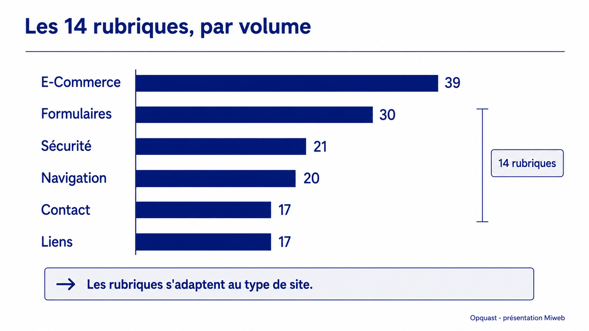
Lecture du visuel
Le titre annonce 14 rubriques. Le graphique en représente six, classées par volume décroissant : le tableau ci-dessous reprend uniquement les valeurs visibles.
Les six rubriques représentées
| Rubrique | Nombre de règles |
|---|---|
| E-Commerce | 39 |
| Formulaires | 30 |
| Sécurité | 21 |
| Navigation | 20 |
| Contact | 17 |
| Liens | 17 |
Message à retenir
Les rubriques s’adaptent au type de site.
- E-Commerce : 39 règles
- Formulaires : 30
- Sécurité : 21
- Navigation : 20
- Identification et contact : 17
- Liens : 17
- Présentation : 17
- Données personnelles : 15
- Structure et code : 15
- Contenus : 14
- Serveur et performances : 13
- Images et médias : 12
- Internationalisation : 8
- Newsletter : 7
Ne pas lire la liste. Montrer puis commenter deux lignes. Les rubriques ne s'appliquent pas toutes à tous les sites : un site vitrine écarte d'emblée les 39 règles E-Commerce.
Slide 7 - Le référentiel est déjà un outil de pilotage
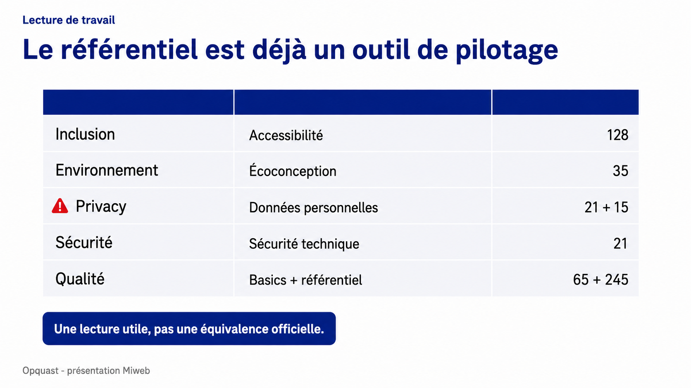
Lecture du visuel
Le tableau rapproche cinq domaines de préoccupations de qualité web. La mention « Lecture de travail » et l’encart final limitent explicitement la portée de ces correspondances.
Lecture de travail
| Domaine | Rapprochement proposé | Valeurs affichées |
|---|---|---|
| Inclusion | Accessibilité | 128 |
| Environnement | Écoconception | 35 |
| Privacy | Données personnelles | 21 + 15 |
| Sécurité | Sécurité technique | 21 |
| Qualité | Basics + référentiel | 65 + 245 |
Avertissement sur la ligne Privacy
Un pictogramme d’alerte accompagne la ligne Privacy et son rapprochement avec les données personnelles.
Message à retenir
Une lecture utile, pas une équivalence officielle.
Rapprochement des cinq domaines et des dimensions du référentiel, telles que mesurées dans la version V5.
- Inclusion : 128 règles portent la dimension Accessibilité.
- Environnement : 35 règles portent la dimension Écoconception.
- Privacy : 21 règles, plus la rubrique Données personnelles avec 15 règles.
- Sécurité : la rubrique dédiée compte 21 règles.
- Qualité : les 65 règles de la dimension Basics, et le référentiel dans son ensemble.
Ce qu'il faut en retenir : les cinq domaines sont déjà adossés à des règles vérifiables.
Slide 8 - Les 6 dimensions transversales
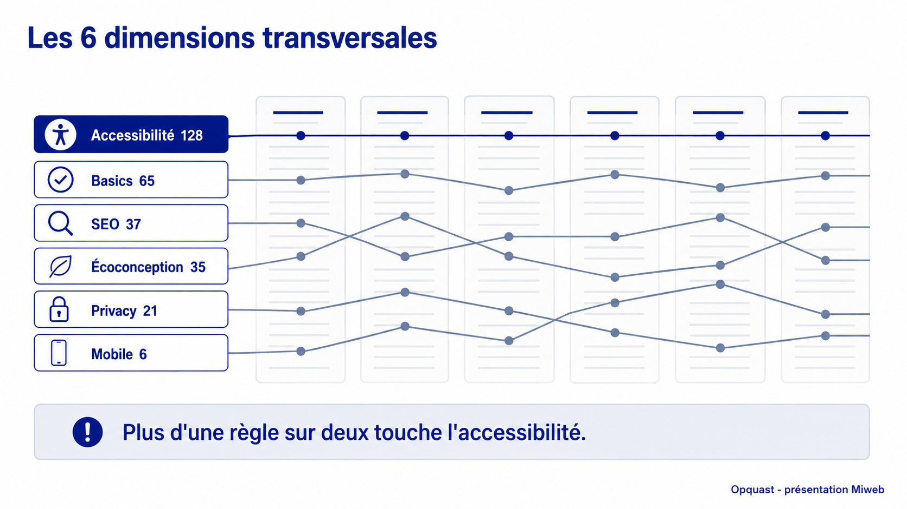
Lecture du visuel
Six lignes traversent plusieurs fiches de règles : une même fiche peut être reliée à plusieurs dimensions. La ligne Accessibilité est mise en évidence.
Les six dimensions transversales
| Dimension | Nombre de règles |
|---|---|
| Accessibilité | 128 |
| Basics | 65 |
| SEO | 37 |
| Écoconception | 35 |
| Privacy | 21 |
| Mobile | 6 |
Message à retenir
Plus d’une règle sur deux touche l’accessibilité.
Une règle appartient à une rubrique, mais elle peut porter plusieurs dimensions.
- Accessibilité : 128 règles
- SEO : 37
- Écoconception : 35
- Privacy : 21
- Mobile : 6
Le chiffre qui parle à Miweb : 128 règles sur 245 touchent l'accessibilité, soit plus de la moitié du référentiel.
Slide 9 - Trois moments, trois métiers
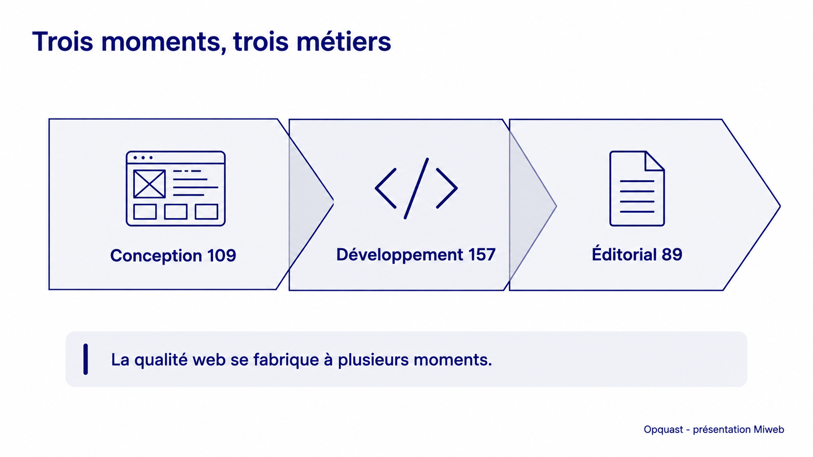
Lecture du visuel
Trois chevrons se chevauchent de gauche à droite. Une maquette, du code et une page de texte représentent la conception, le développement et l’éditorial.
Les trois moments de fabrication
| Moment ou métier | Nombre de règles |
|---|---|
| Conception | 109 |
| Développement | 157 |
| Éditorial | 89 |
Message à retenir
La qualité web se fabrique à plusieurs moments.
Chaque règle est rattachée à une ou plusieurs phases de fabrication.
- Développement : 157 règles
- Conception : 109 règles
- Éditorial : 89 règles
Une même règle relève souvent de plusieurs phases.
Les 89 règles éditoriales montrent que la qualité web n'est pas un sujet de développeurs uniquement.
Slide 10 - Je veux une balançoire
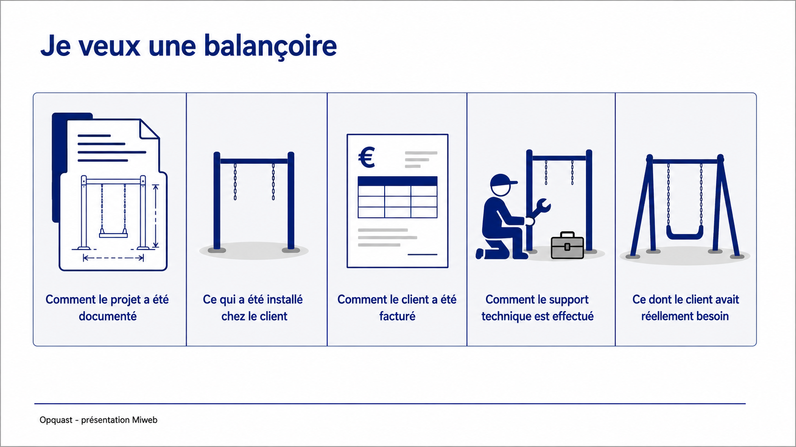
Lecture du visuel
Cinq cases comparent la documentation, l’installation, la facturation et le support avec le besoin réel du client. Elles se lisent de gauche à droite.
1. Comment le projet a été documenté
Des documents présentent le plan coté d’une balançoire complète.
2. Ce qui a été installé chez le client
Un portique est installé avec des chaînes, mais sans siège.
3. Comment le client a été facturé
Une facture est représentée.
4. Comment le support technique est effectué
Un technicien intervient sur le portique, toujours dépourvu de siège.
5. Ce dont le client avait réellement besoin
Une balançoire complète, avec son siège, est enfin utilisable.
Message à retenir
La documentation, la livraison, la facturation et le support doivent rester reliés au besoin réel.
Comment le projet a été documenté
Ce qui a été installé chez le client
Comment le client a été facturé
Comment le support technique est effectué
Ce dont le client avait réellement besoin
Faire observer l'écart entre une demande initiale et les objets produits au fil du projet.
Pas de cause unique :
la nécessité de vérifier les attendus, les livrables, la facturation, le support et le besoin réel.
Slide 11 - Je veux une balançoire
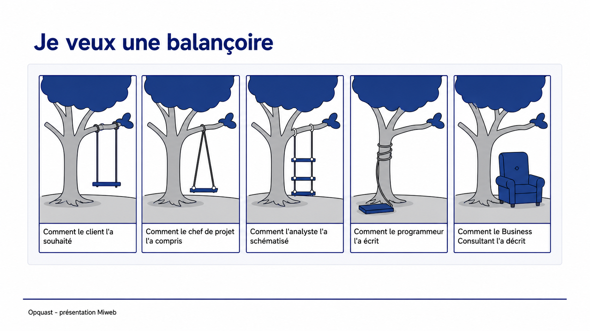
Lecture du visuel
Cinq dessins du même arbre montrent comment une demande de balançoire se transforme d’un métier à l’autre. Les cases se lisent de gauche à droite.
1. Comment le client l’a souhaité
Un siège est suspendu à une branche par deux cordes.
2. Comment le chef de projet l’a compris
La suspension est modifiée : les deux cordes sont davantage écartées.
3. Comment l’analyste l’a schématisé
Plusieurs plateaux sont superposés, comme une échelle.
4. Comment le programmeur l’a écrit
La corde s’enroule autour du tronc ; le siège repose au sol.
5. Comment le Business Consultant l’a décrit
Un fauteuil est posé au pied de l’arbre.
Message à retenir
Les transmissions entre métiers peuvent modifier le sens d’une demande.
Comment le client l'a souhaité
Comment le chef de projet l'a compris
Comment l'analyste l'a schématisé
Comment le programmeur l'a écrit
Comment le Business Consultant l'a décrit
Slide 12 - Qualité : une attention constante
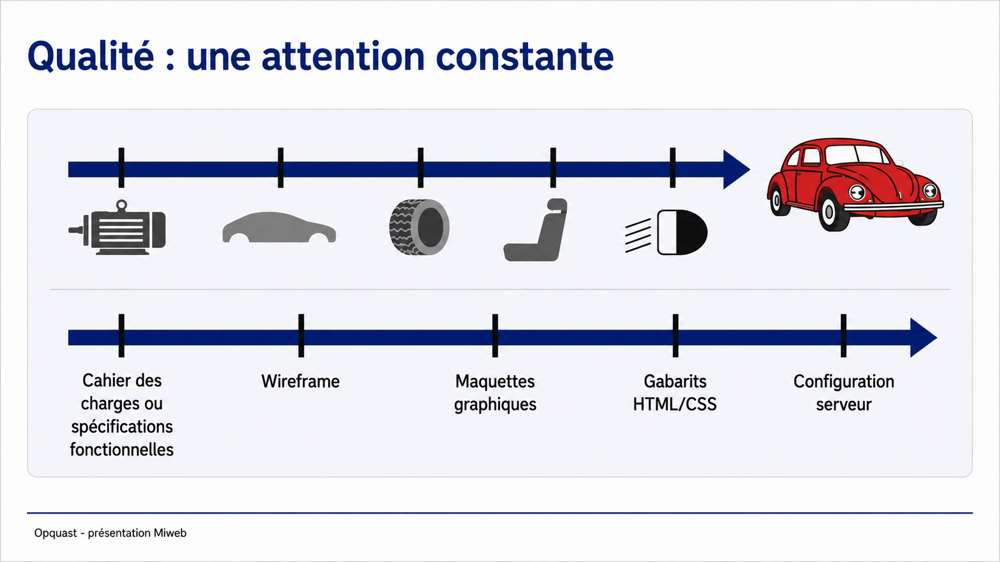
Lecture du visuel
Deux lignes mettent en parallèle la construction d’une voiture et les étapes d’un projet web. Les composants de la première ligne conduisent à une voiture complète.
L’analogie automobile
- Moteur
- Carrosserie
- Pneu
- Siège
- Phare
- Voiture complète
Les étapes du projet web
- Cahier des charges ou spécifications fonctionnelles
- Wireframe
- Maquettes graphiques
- Gabarits HTML/CSS
- Configuration serveur
Message à retenir
La qualité demande une attention continue tout au long de la fabrication.
La ligne supérieure montre une progression de composants vers une voiture complète.
La ligne inférieure conserve exactement les cinq libellés suivants :
Cahier des charges ou spécifications fonctionnelles
Wireframe
Maquettes graphiques
Gabarits HTML/CSS
Configuration serveur
Relier les deux lignes : dans les deux cas, le résultat dépend de vérifications successives et non d'un contrôle unique en fin de parcours.
Faire distinguer l'assemblage d'un objet de la progression d'un projet web.
Slide 13 - Les utilisateurs formulent cinq exigences
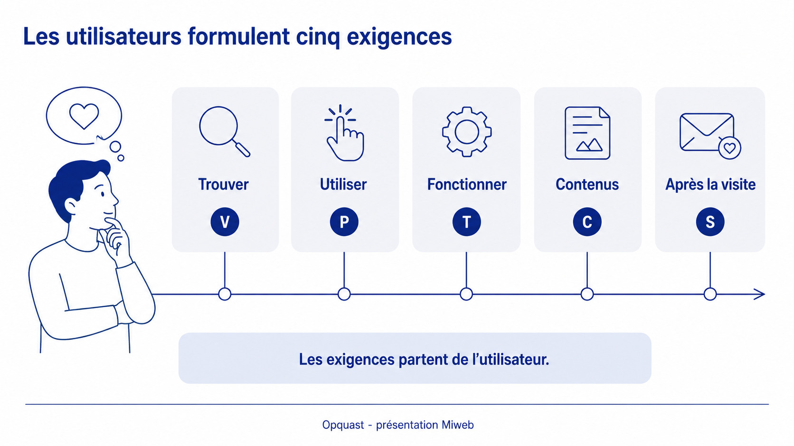
Lecture du visuel
Une personne réfléchit à ses besoins. Cinq cartes sont reliées à une même ligne ; chacune associe une exigence à une lettre du modèle.
Les exigences et leurs lettres repères
| Exigence affichée | Lettre |
|---|---|
| Trouver | V |
| Utiliser | P |
| Fonctionner | T |
| Contenus | C |
| Après la visite | S |
Message à retenir
Les exigences partent de l’utilisateur.
Séquence « Les utilisateurs veulent … » et ses cinq déclinaisons
Les cinq dimensions traduisent des attentes formulées du point de vue de l’utilisateur.
Visibilité : les utilisateurs veulent trouver le site.
Perception : ils veulent utiliser et naviguer.
Technique : ils veulent que le site fonctionne.
Contenus : ils veulent des contenus de bonne qualité.
Services : ils veulent que tout se passe bien après leur visite.
Ces phrases sont complémentaires.
Une bonne visibilité ne compense pas un service défaillant ;
Un contenu riche ne compense pas un site inutilisable.
Slide 14 - Les cinq dimensions de VPTCS
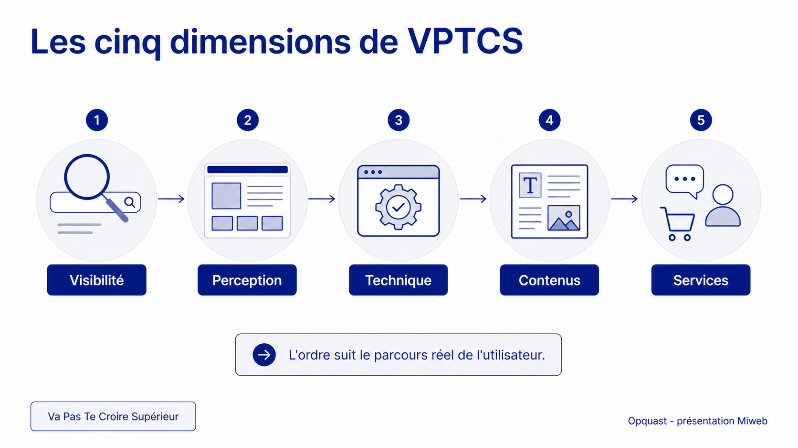
Lecture du visuel
Cinq étapes numérotées sont reliées par des flèches. Le parcours va de la recherche d’un service à la relation qui se poursuit autour de son utilisation.
Les dimensions dans l’ordre du parcours
- Visibilité
- Perception
- Technique
- Contenus
- Services
Moyen mnémotechnique
Va Pas Te Croire Supérieur
Message à retenir
L’ordre suit le parcours réel de l’utilisateur.
VPTCS donne un vocabulaire commun pour parler de l’expérience.
Lire les lettres et leurs noms dans l’ordre :
Visibilité : l'utilisateur doit pouvoir trouver le service.
Perception : il doit pouvoir percevoir, comprendre et utiliser l'interface.
Technique : le service doit fonctionner correctement.
Contenus : il doit y trouver des informations utiles et fiables.
Services : l'action engagée doit aboutir.
Faire remarquer l'ordre : il suit le parcours réel de l'utilisateur, du moment où il cherche jusqu'à celui où il obtient satisfaction.
Slide 15 - Moyen mnémotechnique
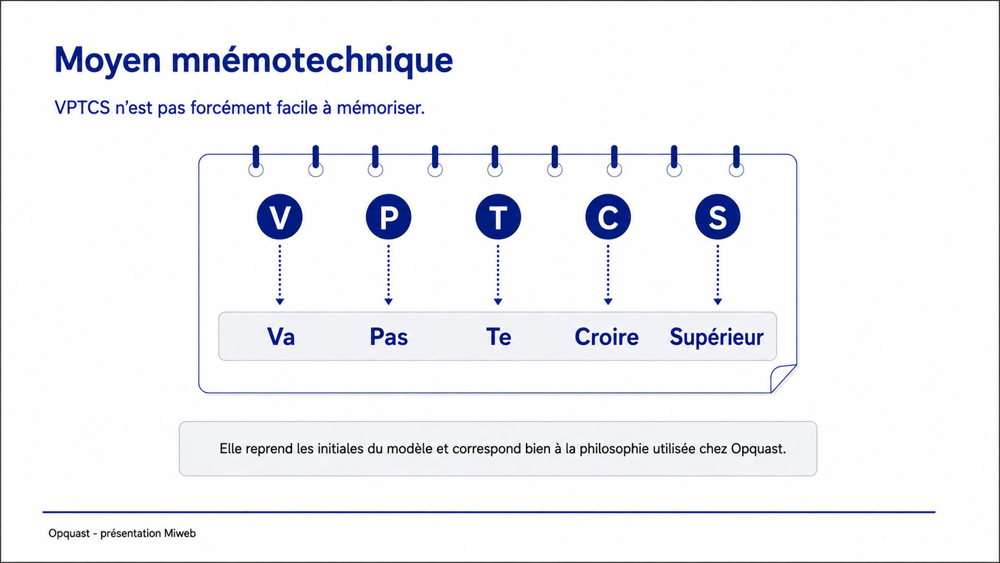
Lecture du visuel
Une feuille de carnet aligne les cinq lettres VPTCS. Des pointillés associent chaque lettre au mot correspondant dans la phrase mnémotechnique.
Pourquoi une phrase repère ?
VPTCS n’est pas forcément facile à mémoriser.
Associer chaque lettre à un mot
| Lettre | Mot |
|---|---|
| V | Va |
| P | Pas |
| T | Te |
| C | Croire |
| S | Supérieur |
La phrase à retenir
Va Pas Te Croire Supérieur
Message à retenir
Elle reprend les initiales du modèle et correspond bien à la philosophie utilisée chez Opquast.
Moyen mnémotechnique
VPTCS n’est pas forcément facile à mémoriser.
Vous pouvez retenir la phrase suivante :
> Va Pas Te Croire Supérieur
Autres formules mnémotechniques :
- Emphatique : Vous Pouvez Tout Comprendre, Simplement
- Académique : Vision Pluridisciplinaire des Talents Contribuant au Succès
- Agressif : Vous Prétendez Tout Connaître, sérieusement ?
- Résigné : Visiblement Personne Touche aux Contenus du Site
- Optimiste : Votre Projet Tend Continuellement vers le Succès
- Interrogatif : Votre Projet Tient Compte des (Open Quality) Standards ?
- Mercantile : Vous Pouvez Toucher des Consommateurs Supplémentaires
- Religieux : Vous Pouvez Toujours Croire Sloïm
- Anglophone : Very Powerfull Tool for Customer Satisfaction
- Philosophe : Vouloir Progresser Toujours, Constamment et Simplement
Slide 16 - Différencier expérience utilisateur et interface utilisateur
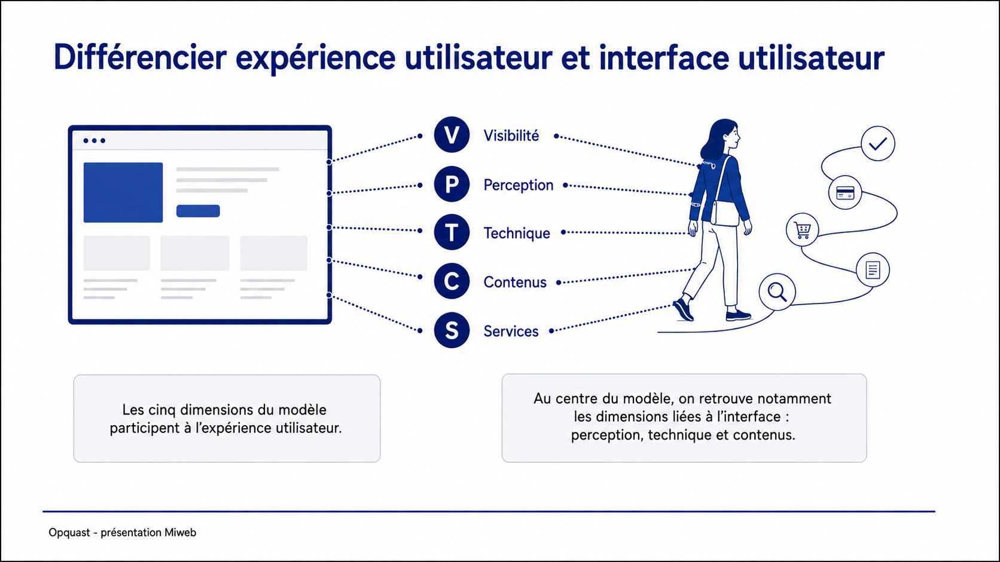
Lecture du visuel
Une interface web, à gauche, fait face à une personne suivant un parcours, à droite. Les pointillés relient les dimensions du modèle à ces deux représentations.
Les cinq dimensions du modèle
| Lettre | Dimension |
|---|---|
| V | Visibilité |
| P | Perception |
| T | Technique |
| C | Contenus |
| S | Services |
Expérience utilisateur
Les cinq dimensions du modèle participent à l’expérience utilisateur.
Interface utilisateur
Au centre du modèle, on retrouve notamment les dimensions liées à l’interface : perception, technique et contenus.
Message à retenir
L’expérience utilisateur mobilise les cinq dimensions et dépasse l’interface seule.
Différencier expérience utilisateur et interface utilisateur
Les cinq dimensions du modèle participent à l’expérience utilisateur.
Au centre du modèle, on retrouve notamment les dimensions liées à l’interface : perception, technique et contenus.
Relier les cinq dimensions à l’expérience utilisateur et distinguer les dimensions liées à l’interface.
Slide 17 - UI est visible, UX traverse le parcours
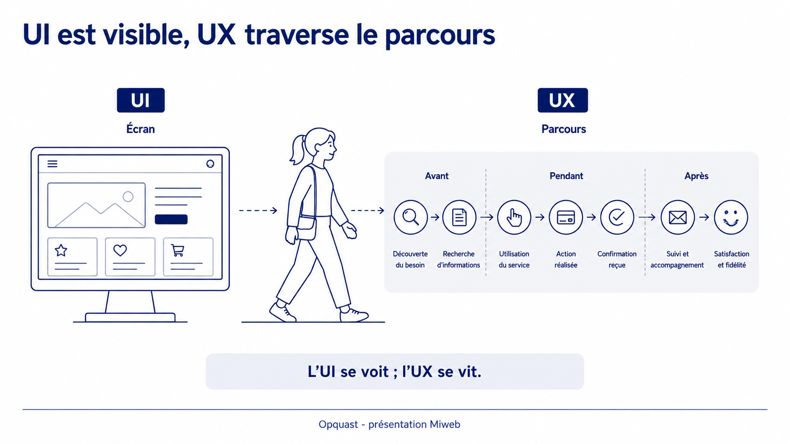
Lecture du visuel
L’UI est représentée par un écran à gauche. À droite, une personne suit un parcours UX organisé en trois moments.
UI - Écran
L’interface est représentée par un écran.
UX - Parcours
Avant
Découverte du besoin et recherche d’informations.
Pendant
Utilisation du service, action réalisée et confirmation reçue.
Après
Suivi et accompagnement, satisfaction et fidélité.
Message à retenir
L’UI se voit ; l’UX se vit.
L’interface utilisateur est une partie visible ; l’expérience utilisateur comprend le parcours complet.
Expliquer simplement la différence entre UI et UX
UI
A B
UX
Visibilité
Perception
Technique
Contenus
Services
UI renvoie à l’interface, à ce que l’on voit et manipule à un moment donné.
UX renvoie à l’expérience plus large : trouver, comprendre, utiliser, terminer l’action et vivre l’après.
Ne pas opposer les deux notions. Une bonne UI contribue à l’UX, mais ne suffit pas à elle seule à garantir une bonne expérience.
Slide 18 - VPTCS, le modèle derrière les règles
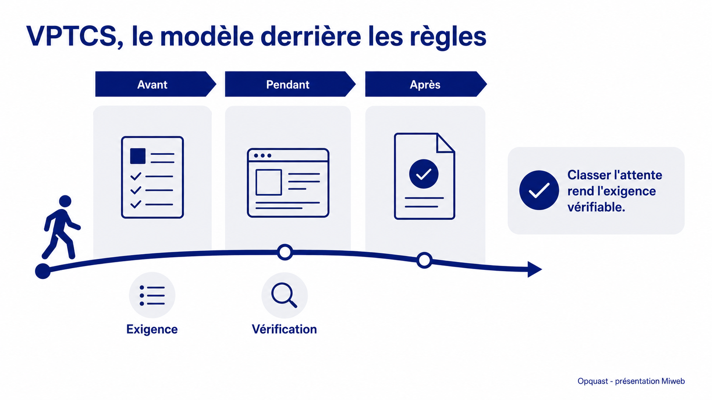
Lecture du visuel
Une personne avance sur une ligne traversant trois panneaux. Une liste d’exigences, une page web et un document validé illustrent l’avant, le pendant et l’après.
Les trois moments du parcours
- Avant
- Pendant
- Après
De l’attente au contrôle
Exigence → Vérification
Message à retenir
Classer l’attente rend l’exigence vérifiable.
Les 245 règles ne sont pas une accumulation.
Elles sont classées selon un modèle antérieur, VPTCS, qui analyse la qualité d'un service numérique du point de vue de l'utilisateur.
Son postulat de départ : l'utilisateur évalue son expérience de façon chronologique, avant, pendant et après son usage.
Le modèle est né d'un refus, celui des exigences invérifiables.
Écrire dans un cahier des charges « le site sera ergonomique » n'engage personne.
Classer les exigences par ce que l'utilisateur attend permet au contraire de les vérifier.
Le modèle a une vingtaine d'années : c'est un argument de solidité
Slide 19 - À chaque dimension ses métiers
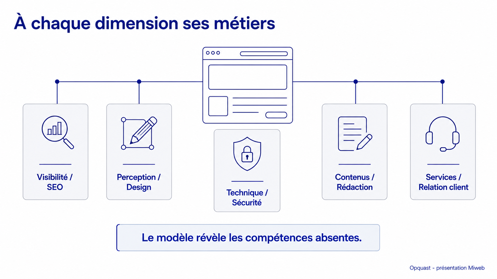
Lecture du visuel
Une page web est reliée à cinq cartes. Chaque carte associe une dimension du modèle à une compétence à mobiliser.
Les correspondances dimension / métier
| Dimension | Compétence associée |
|---|---|
| Visibilité | SEO |
| Perception | Design |
| Technique | Sécurité |
| Contenus | Rédaction |
| Services | Relation client |
Message à retenir
Le modèle révèle les compétences absentes.
Le modèle se lit aussi comme une cartographie des compétences.
Visibilité : référencement, webmarketing.
Perception : ergonomie, design, accessibilité.
Technique : développement, hébergement, sécurité.
Contenus : rédaction, traduction, juridique.
Services : logistique, relation client, après-vente.
Slide 20 - La transversalité relie les métiers
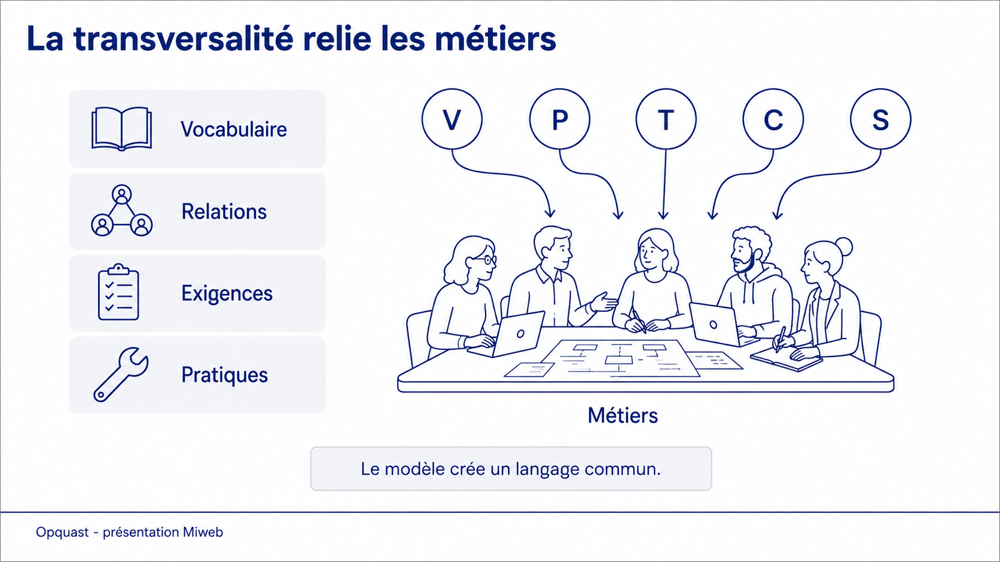
Lecture du visuel
Quatre repères sont listés à gauche. À droite, les cinq lettres VPTCS convergent vers une équipe réunie autour d’une table et de documents.
Ce que les métiers partagent
- Vocabulaire
- Relations
- Exigences
- Pratiques
Le modèle relie les métiers
V, P, T, C, S → Métiers
Message à retenir
Le modèle crée un langage commun.
La transversalité se construit par un vocabulaire, des relations, des exigences et des pratiques partagés.
Le modèle offre un point d’appui commun pour organiser ces éléments.
Ce n’est pas une couche théorique supplémentaire : c’est une manière de rendre les collaborations et les arbitrages plus explicites.
Slide 21 - (se) répartir les responsabilités
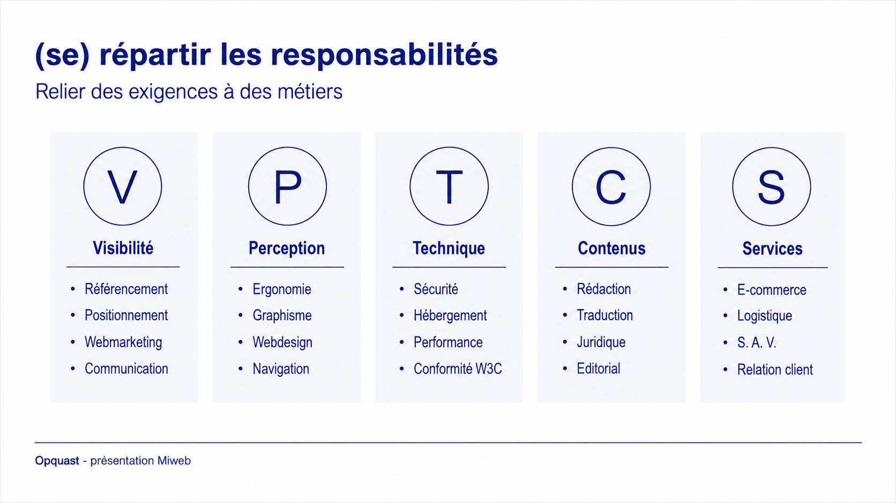
Lecture du visuel
Cinq colonnes associent les dimensions VPTCS aux compétences qui y contribuent. Chaque rubrique ci-dessous reprend une colonne du visuel.
Le principe
Relier des exigences à des métiers
V - Visibilité
Référencement, Positionnement, Webmarketing, Communication.
P - Perception
Ergonomie, Graphisme, Webdesign, Navigation.
T - Technique
Sécurité, Hébergement, Performance, Conformité W3C.
C - Contenus
Rédaction, Traduction, Juridique, Éditorial.
S - Services
E-commerce, Logistique, S. A. V., Relation client.
Message à retenir
Relier les exigences aux métiers aide à répartir les responsabilités.
(se) répartir les responsabilités
Relier des exigences à des métiers
Visibilité
Référencement
Positionnement
Webmarketing
Communication
Perception
Ergonomie
Graphisme
Webdesign
Navigation
Technique
Sécurité
Hébergement
Performance
Conformité W3C
Contenus
Rédaction
Traduction
Juridique
Editorial
Services
E-commerce
Logistique
S. A. V.
Relation client
Slide 22 - Un modèle sert à agir
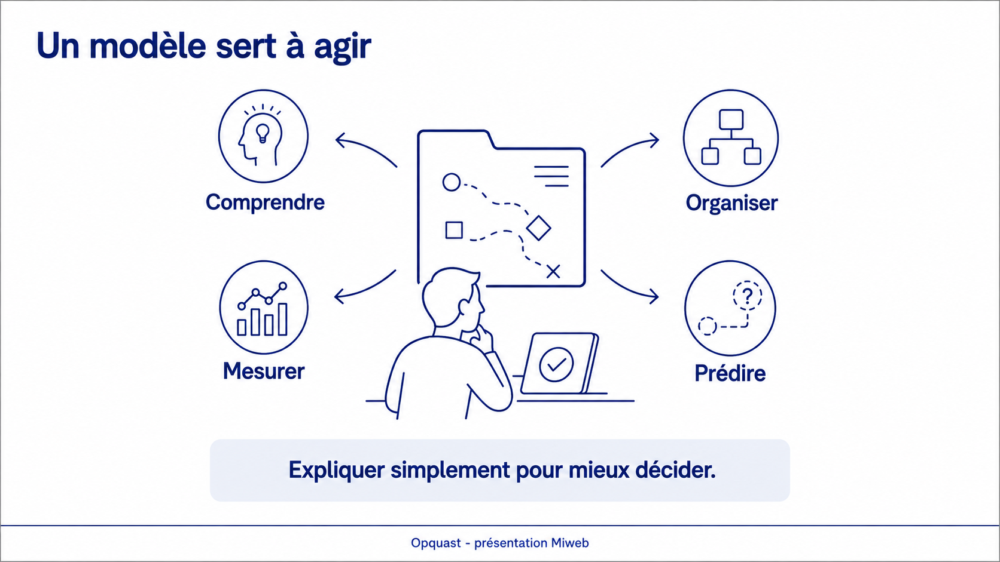
Lecture du visuel
Une personne consulte un schéma central. Quatre flèches partent de ce schéma vers les fonctions Comprendre, Organiser, Mesurer et Prédire, illustrées par une idée, un organigramme, un graphique et un parcours interrogatif.
Les quatre usages du modèle
- Comprendre
- Organiser
- Mesurer
- Prédire
Message à retenir
Expliquer simplement pour mieux décider.
Section « Pour quoi faire ? »
Le modèle a quatre fonctions : comprendre, organiser, mesurer et prédire.
Le premier bénéfice est l’explication simple.
Ensuite, le modèle aide à organiser les responsabilités et les sujets.
Il permet aussi de mesurer ce qui est suivi.
Enfin, il peut soutenir une prédiction ou une hypothèse, sans transformer cette prédiction en certitude.
Slide 23 - Mettre en évidence la valeur ajoutée du site
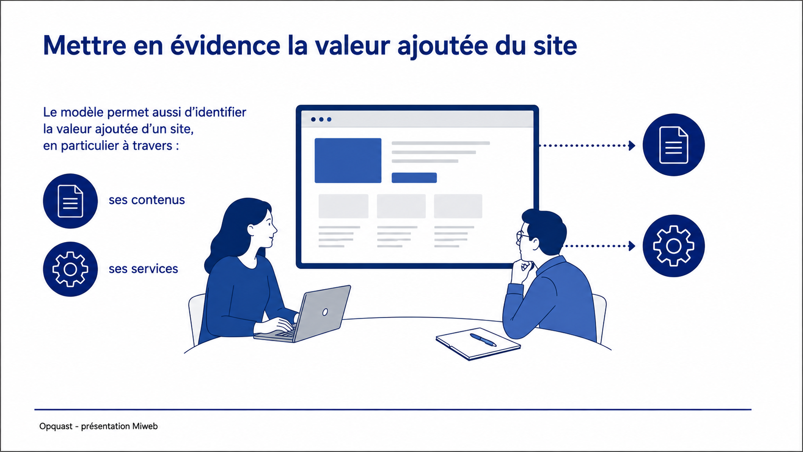
Lecture du visuel
Deux personnes discutent devant une page web. Deux flèches relient cette page à un document et à un engrenage, qui représentent les contenus et les services.
Les deux éléments de valeur ajoutée
Le modèle permet aussi d’identifier la valeur ajoutée d’un site, en particulier à travers ses contenus et ses services.
Message à retenir
Le modèle permet d’identifier la valeur ajoutée des contenus et des services.
Mettre en évidence la valeur ajoutée du site
Le modèle permet aussi d’identifier la valeur ajoutée d’un site, en particulier à travers :
ses contenus ;
ses services.
La visibilité, la perception et la technique servent à rendre cette valeur trouvable, accessible et utilisable.
Un commanditaire paie deux fois :
une fois la prestation technique et graphique,
une fois la production de ses propres contenus et la tenue de ses propres services.
Formuler la question utile : qui, chez nous, produira les contenus et fera vivre le service ?
Slide 24 - L’utilisateur ne voit pas nos silos
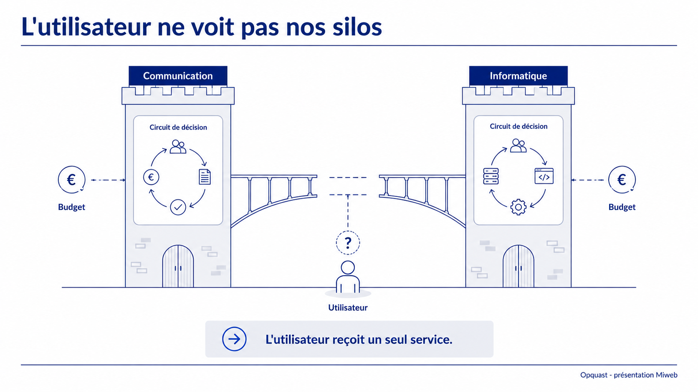
Lecture du visuel
Deux tours représentent les silos Communication et Informatique. Le pont entre elles est interrompu ; l’utilisateur, placé sous la rupture, attend un service unique.
Deux organisations internes
Communication
Budget et circuit de décision.
Informatique
Circuit de décision et budget.
Message à retenir
L’utilisateur reçoit un seul service.
Quand une page est inutilisable, la cause technique, graphique ou éditoriale est indifférente à l'utilisateur. Le service n'est pas rendu.
Les organisations séparent souvent deux circuits de décision, la communication et l'informatique, avec des budgets sans commune mesure.
La transversalité est une condition nécessaire de la réussite d'un projet web. Elle n'est pas suffisante, mais sans elle rien ne tient.
Faire de cette slide la charnière de la présentation. Passer du modèle d'analyse à la question du pilotage, puis enchaîner sur QSE-IP.
Slide 25 - Pour l’utilisateur, tout devient un seul service
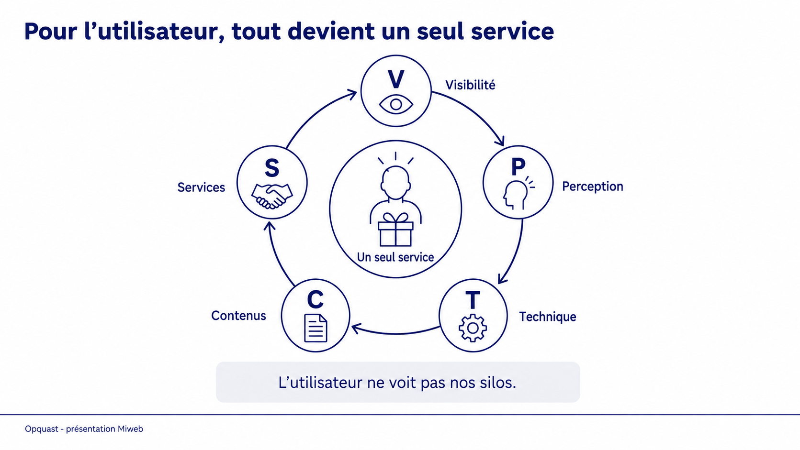
Lecture du visuel
Une personne se trouve au centre d’un cercle. Les cinq dimensions VPTCS forment une boucle autour d’elle et contribuent à un même service.
Les dimensions reliées autour de l’utilisateur
| Lettre | Dimension |
|---|---|
| V | Visibilité |
| P | Perception |
| T | Technique |
| C | Contenus |
| S | Services |
Au centre du schéma
Un seul service
Message à retenir
L’utilisateur ne voit pas nos silos.
L’utilisateur ne perçoit pas les limites de l’organisation interne.
Le corpus conclut la séquence des silos par « Pas de silos pour l’utilisateur ». Les cinq dimensions VPTCS convergent autour d’une expérience vécue comme un tout.
Cette slide doit être présentée comme un changement de point de vue : on ne demande pas à l’utilisateur de comprendre l’organigramme pour réussir son parcours.
Slide 26 - Les silos organisent des décisions différentes
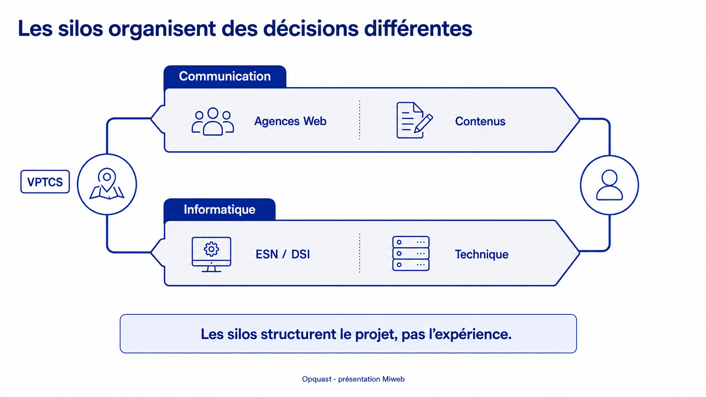
Lecture du visuel
Depuis le modèle VPTCS, deux circuits conduisent à une même personne. Le schéma distingue les organisations internes qui contribuent à son expérience.
Point de départ
VPTCS
Les deux circuits de décision
| Organisation | Acteurs | Dimension mise en avant |
|---|---|---|
| Communication | Agences Web | Contenus |
| Informatique | ESN / DSI | Technique |
Message à retenir
Les silos structurent le projet, pas l’expérience.
Les circuits de décision peuvent découper le projet selon des silos de communication ou d’informatique.
Le premier circuit est présenté comme un silo communication : agences Web et communication, avec une dominante Contenus.
Le second est présenté comme un silo informatique : agences Web, ESN ou SSII, DSI et métiers, avec une dominante Technique.
Le point n’est pas de juger les équipes.
Il est de montrer qu’une organisation interne peut produire des décisions séparées alors que l’utilisateur attend une expérience continue.
Slide 27 - Les cinq domaines de QSE-IP
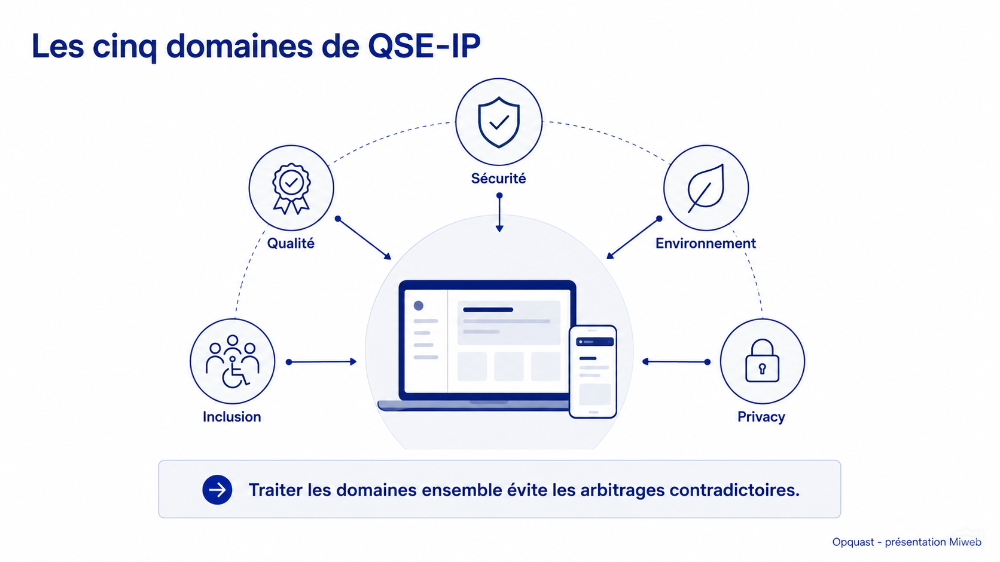
Lecture du visuel
Un ordinateur et un téléphone sont au centre du schéma. Cinq domaines les entourent et pointent vers ce même service numérique.
Les cinq domaines
- Qualité
- Sécurité
- Environnement
- Inclusion
- Privacy
Message à retenir
Traiter les domaines ensemble évite les arbitrages contradictoires.
QSE-IP
Qualité : le service rend ce qu'il promet.
Sécurité : il résiste aux atteintes.
Environnement : il limite son empreinte.
Inclusion : accessibilité aux personnes handicapées, mais aussi diversité, parité et non-discrimination.
Privacy : préservation des données personnelles.
Insister sur l'extension du I : l'inclusion ne se réduit pas à l'accessibilité technique.
Ces cinq domaines se traitent de front ; séparés, ils produisent des arbitrages contradictoires.
Slide 28 - Auditer ou évaluer un site
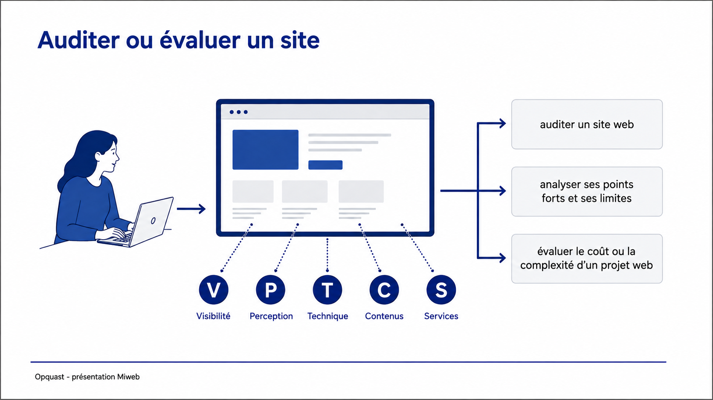
Lecture du visuel
Une personne examine un site web relié aux cinq dimensions VPTCS. Trois flèches à droite conduisent aux usages possibles de cette analyse.
Les dimensions examinées
| Lettre | Dimension |
|---|---|
| V | Visibilité |
| P | Perception |
| T | Technique |
| C | Contenus |
| S | Services |
Les trois usages présentés
- auditer un site web
- analyser ses points forts et ses limites
- évaluer le coût ou la complexité d’un projet web
Message à retenir
Le modèle fournit plusieurs angles pour auditer un site et évaluer un projet.
Auditer ou évaluer un site
Le modèle est également utilisé pour :
- auditer un site web ;
- analyser ses points forts et ses limites ;
- évaluer le coût ou la complexité d’un projet web.
Slide 29 - VPTCS dépasse le numérique
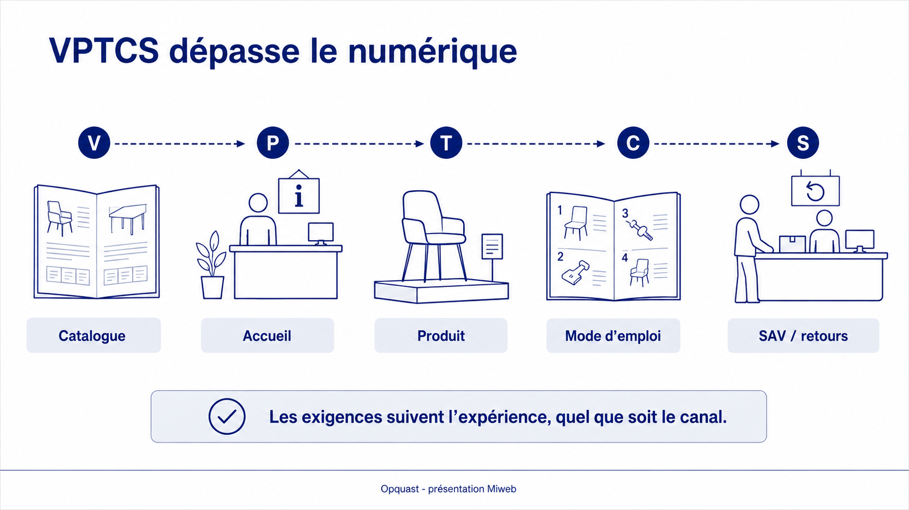
Lecture du visuel
Les lettres VPTCS jalonnent un parcours hors du numérique. Des flèches relient le catalogue, l’accueil, le produit, son mode d’emploi et le service après-vente.
Un parcours d’achat et d’usage d’un meuble
| Lettre | Étape représentée |
|---|---|
| V | Catalogue |
| P | Accueil |
| T | Produit |
| C | Mode d’emploi |
| S | SAV / retours |
Le mode d’emploi
Le document illustré comporte quatre étapes numérotées : 1, 2, 3 et 4.
Message à retenir
Les exigences suivent l’expérience, quel que soit le canal.
Le modèle peut lire une expérience qui combine supports numériques, produits et services physiques.
Le corpus propose les correspondances suivantes :
- Visibilité : où trouver, catalogues.
- Perception : ergo-design.
- Technique : spécifications techniques.
- Contenus : mode d’emploi, instructions et montage.
- Services : SAV et retours.
Le modèle suit donc les exigences utilisateurs au-delà de la seule interface web.
Slide 30 - Une règle a quatre éléments
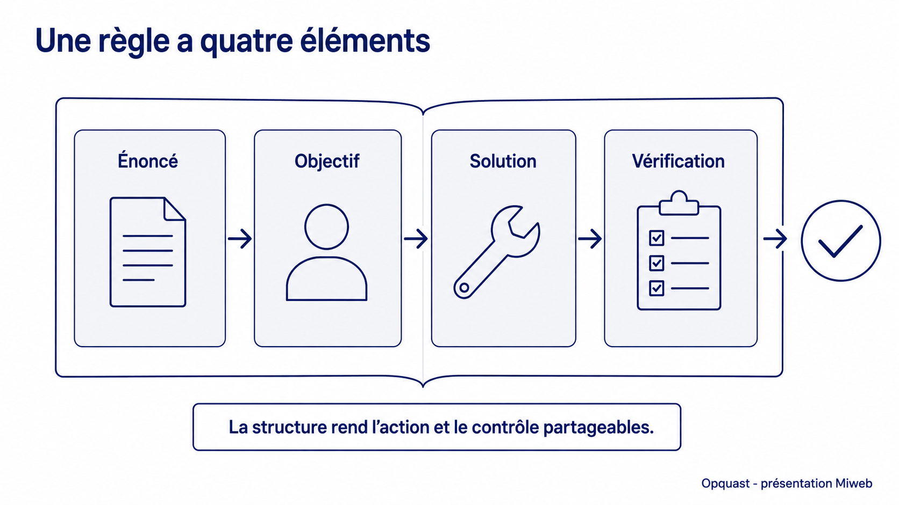
Lecture du visuel
Un livre ouvert contient quatre panneaux reliés par des flèches. Un document, une personne, un outil et une liste de contrôle illustrent les éléments d’une règle ; une coche clôt la séquence.
Les quatre éléments, dans l’ordre
- Énoncé
- Objectif
- Solution
- Vérification
Message à retenir
La structure rend l’action et le contrôle partageables.
Chaque règle porte quatre éléments exploitables directement :
L’énoncé décrit un état constatable, pas un conseil.
L’objectif explique le bénéfice attendu pour l’utilisateur.
La solution indique comment mettre la règle en œuvre.
La vérification décrit comment produire le verdict.
C'est ce quatrième point qui rend le référentiel opposable : deux personnes qui appliquent la même vérification arrivent au même verdict.
Insister sur la vérification. C'est le pivot de la première partie.
Slide 31 - Une règle commence par un problème utilisateur
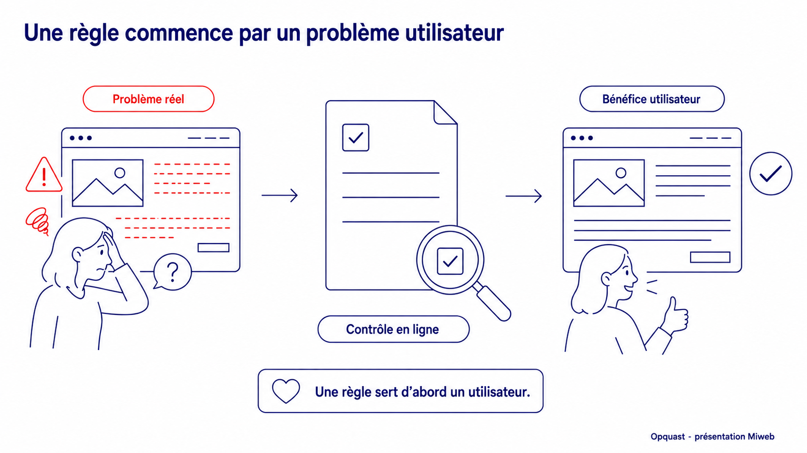
Lecture du visuel
À gauche, une personne rencontre un problème sur une interface. Au centre, une fiche et une loupe représentent le contrôle en ligne. À droite, une interface corrigée et une personne satisfaite représentent le bénéfice utilisateur.
Du problème au bénéfice utilisateur
- Problème réel
- Contrôle en ligne
- Bénéfice utilisateur
Message à retenir
Une règle sert d’abord un utilisateur.
Penser à une difficulté réelle rencontrée par un utilisateur.
Faire préciser le bénéfice attendu avant de parler de solution.
La règle doit ensuite permettre un contrôle concret en ligne. Elle ne se réduit donc ni à une intention ni à une bonne pratique générale.
Interaction
Quel problème utilisateur cette règle cherche-t-elle à éviter ?
Rappeler que l’erreur de formulation est normale avant de reformuler ensemble.
Slide 32 - Une règle pose une seule question
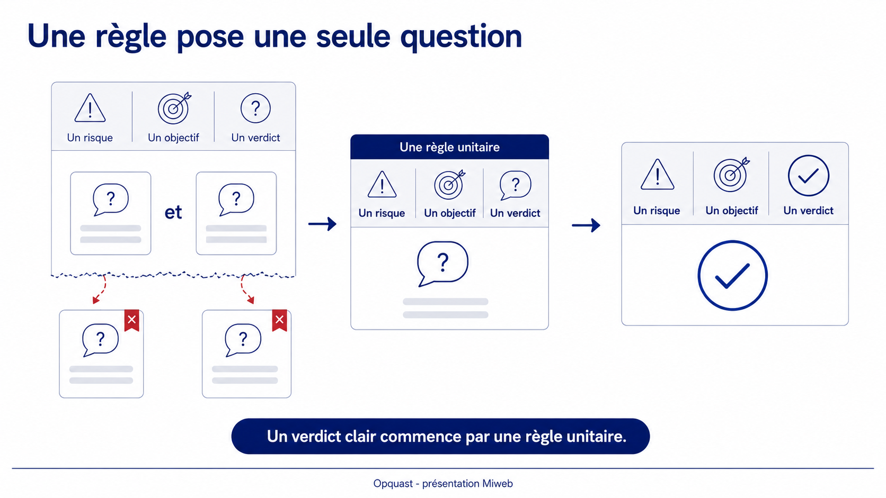
Lecture du visuel
La séquence compare une fiche qui mélange deux questions avec une règle unitaire, puis un verdict validé. Les mêmes trois repères apparaissent sur chaque fiche.
Les trois repères communs
- Un risque
- Un objectif
- Un verdict
Le passage à une règle unitaire
1. Deux questions à séparer
Une même fiche contient deux questions reliées par « et ».
2. Une règle unitaire
La fiche centrale ne porte plus qu’une seule question.
3. Un verdict clair
La dernière fiche se termine par une coche de validation.
Message à retenir
Un verdict clair commence par une règle unitaire.
Une règle unitaire porte sur un seul risque, un seul objectif ou une seule question.
Deux évaluateurs doivent pouvoir aboutir au même verdict.
Le point de vigilance concerne les exigences indépendantes assemblées dans une même phrase, pas l’interdiction du mot « et » dans le langage courant.
Slide 33 - Une règle doit rester claire et applicable
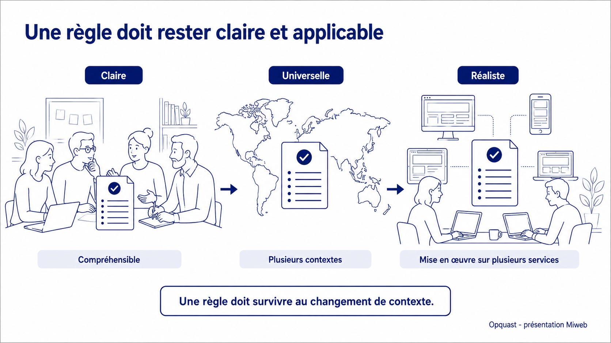
Lecture du visuel
Trois scènes montrent une règle comprise par une équipe, transposable dans plusieurs contextes puis applicable à plusieurs services.
Claire
Compréhensible
Universelle
Plusieurs contextes
Réaliste
Mise en œuvre sur plusieurs services
Message à retenir
Une règle doit survivre au changement de contexte.
La règle doit être comprise par des professionnels différents.
Elle ne doit pas dépendre d’un pays, d’une législation nationale ou d’un contexte local.
Elle doit aussi pouvoir être mise en œuvre sur une grande variété de services numériques.
« Universelle » signifie donc transférable, pas identique en toute circonstance.
Une règle peut être simple à lire tout en restant assez précise pour produire un contrôle commun.
Slide 34 - Une règle doit durer et rassembler
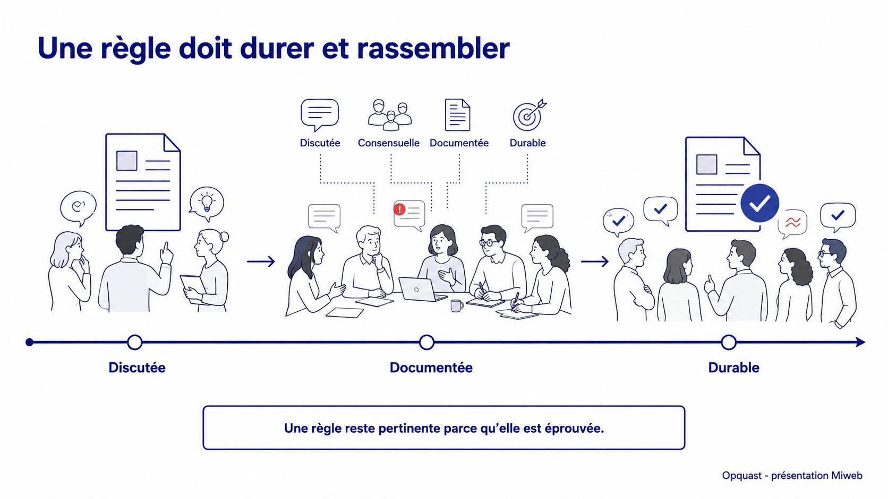
Lecture du visuel
Une proposition passe d’un petit groupe à une table de discussion, puis à une version validée. Une ligne du temps relie les étapes de cette construction collective.
Les quatre qualités attendues
- Discutée
- Consensuelle
- Documentée
- Durable
La progression sur la ligne du temps
- Discutée
- Documentée
- Durable
Message à retenir
Une règle reste pertinente parce qu’elle est éprouvée.
Passage sur la durabilité : une règle doit rester pertinente et vérifiable dans le temps, sans date d’expiration.
La discussion sert à trouver les ambiguïtés, les cas limites et les difficultés d’application.
Le consensus ne signifie pas l’unanimité : il signifie qu’une adhésion suffisamment large existe et qu’aucune objection majeure ne reste sans
réponse.
La documentation permet de conserver le raisonnement et de défendre la règle dans le temps.
Slide 35 - Une règle passe cinq questions
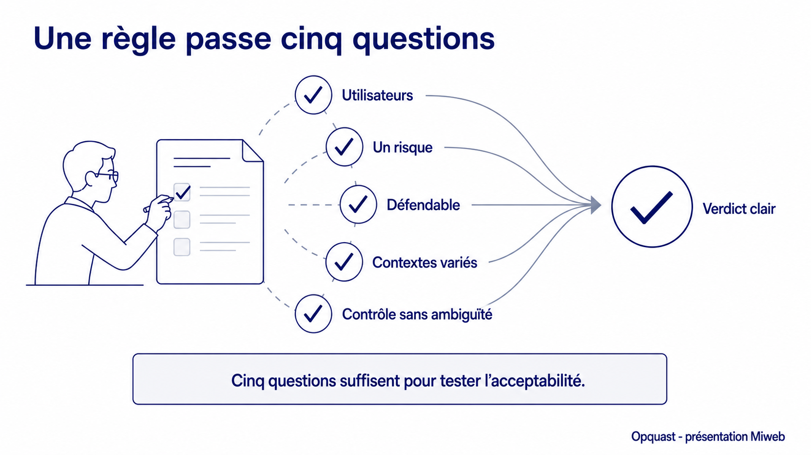
Lecture du visuel
Une personne vérifie une fiche. Cinq branches cochées convergent vers un même verdict.
Les cinq points à examiner
- Utilisateurs
- Un risque
- Défendable
- Contextes variés
- Contrôle sans ambiguïté
Le résultat recherché
Verdict clair
Message à retenir
Cinq questions suffisent pour tester l’acceptabilité.
Les cinq questions minimales portent sur
l’utilité pour les utilisateurs,
l’unicité du risque,
l’absence d’ambiguïté du contrôle,
l’applicabilité dans des contextes variés
et la possibilité de défendre et documenter la règle.
Elles ne constituent pas un score numérique.
Elles servent de filtre de qualité avant de poursuivre la discussion.
Slide 36 - La règle se construit à plusieurs
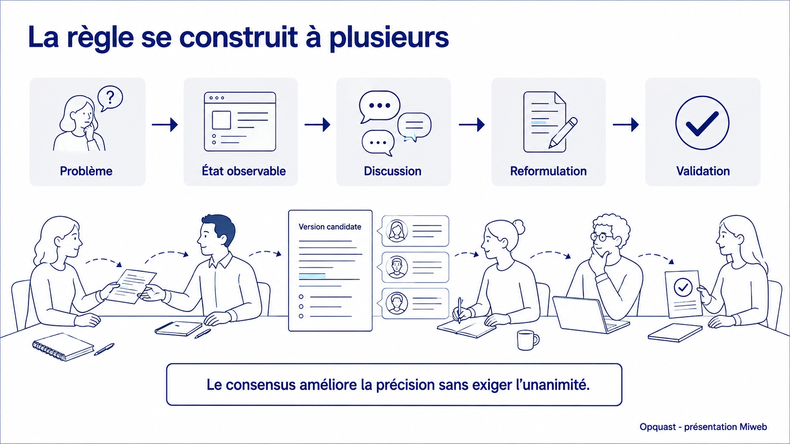
Lecture du visuel
Une première ligne conduit du problème à la validation. En dessous, des personnes échangent une version candidate et des commentaires jusqu’à une fiche validée.
Les cinq étapes de construction
- Problème
- État observable
- Discussion
- Reformulation
- Validation
Le support de la discussion
Version candidate
Message à retenir
Le consensus améliore la précision sans exiger l’unanimité.
Le processus part d’un problème utilisateur, formule un état observable, sépare l’énoncé, l’objectif, la solution et le contrôle, puis soumet la
proposition aux contributeurs.
Les discussions recherchent les ambiguïtés et les cas limites.
La formulation est ensuite réécrite en conservant le sens et la compréhension, avant une validation, une fusion ou une suppression selon
l’utilité, la faisabilité, la vérifiabilité et le consensus.
Point de vigilance
Ne pas présenter la scène comme une procédure de vote formelle. Elle montre un travail de discussion et de reformulation documenté.
Slide 37 - Règle 69, l’étiquette de formulaire
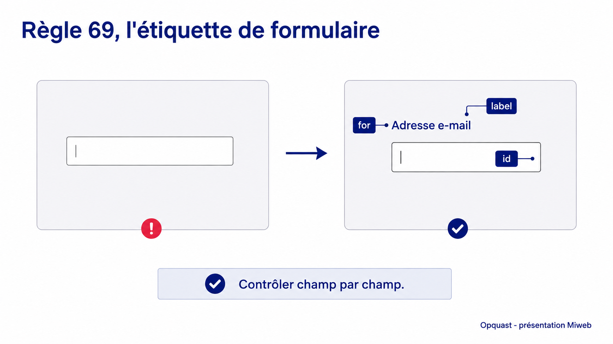
Lecture du visuel
Deux états d’un champ de formulaire sont comparés, avant et après l’association de son étiquette.
Avant : un champ sans étiquette
Le champ ne porte aucun nom ; un pictogramme d’alerte signale le problème.
Après : un champ identifié
Le champ est associé à l’étiquette « Adresse e-mail » ; une coche valide cette association.
Les repères techniques du schéma
- label : l’étiquette du champ.
- for : le lien de l’étiquette vers le champ.
- id : l’identifiant du champ.
Message à retenir
Contrôler champ par champ.
« Chaque champ de formulaire est associé dans le code source à une étiquette qui lui est propre. »
Rubrique Formulaires, gravité critique, dimensions Basics et Accessibilité, phase Développement.
Solution : un élément `label` doté d'un attribut `for` reprenant l'`id` du champ, ou une alternative explicite si l'étiquette n'est pas visible.
Vérification : contrôler dans le code source la correspondance entre `for` et `id`, champ par champ.
Slide 38 - Règle 165, le focus clavier
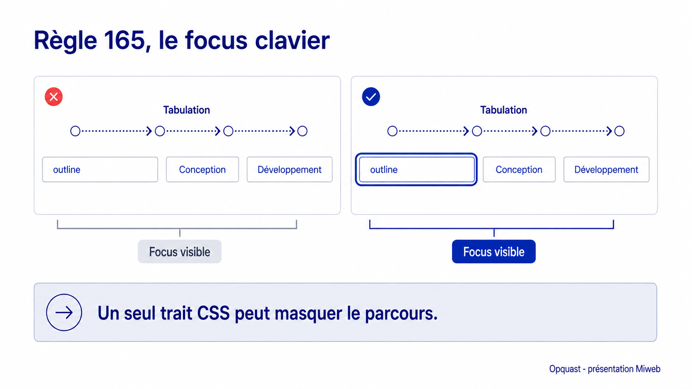
Lecture du visuel
Deux parcours de tabulation sont comparés. Les libellés sont identiques dans les deux panneaux ; la différence est la présence d’un repère visuel sur l’élément actif.
Mode de déplacement
Tabulation
Les éléments affichés dans les deux panneaux
Les deux panneaux portent les mentions « outline », « Conception » et « Développement ».
Focus visible : comparaison des deux parcours
À gauche : le cas en échec
Le parcours est marqué d’une croix. Aucun élément actif ne se distingue visuellement.
À droite : le cas validé
Un contour bleu entoure l’élément actif ; une coche valide le parcours.
Message à retenir
Un seul trait CSS peut masquer le parcours.
« Le focus clavier n'est ni supprimé ni masqué. »
Rubrique Navigation, gravité critique, dimensions Basics et Accessibilité, phases Conception et Développement.
Solution : ne pas annuler la propriété CSS `outline` sans lui substituer un indicateur visible.
Vérification : parcourir tous les éléments interactifs à la touche de tabulation.
Slide 39 - La certification, ce qu’elle est
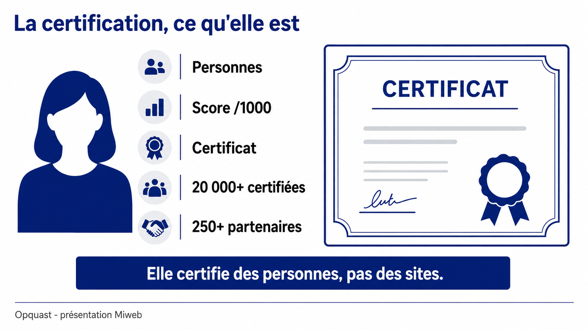
Lecture du visuel
Une personne et un certificat encadrent une liste de caractéristiques. L’encart final précise le périmètre de la certification.
Personnes, score et certificat
La certification porte sur les personnes ; elle associe un score sur 1 000 et un certificat.
Les chiffres affichés
20 000+ personnes certifiées et 250+ partenaires.
Le document illustré
CERTIFICAT
Message à retenir
Elle certifie des personnes, pas des sites.
Les modalités concrètes de la certification.
La certification s'intitule « Maîtrise de la qualité en projet web ».
Elle porte sur des personnes, jamais sur des sites ni sur des prestataires. Elle donne un score sur 1000, et non une simple mention réussite ou échec. Le score, la référence du certificat et le nom du certifié sont indissociables.
Opquast revendique plus de 20 000 personnes certifiées et plus de 250 partenaires.
Le point « elle certifie des personnes » évite un malentendu fréquent : on ne peut pas afficher un site certifié Opquast.
Slide 40 - La formation, 12 à 14 heures en ligne
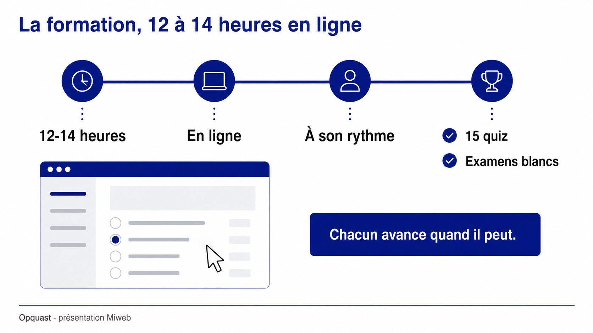
Lecture du visuel
Une ligne relie une horloge, un ordinateur, une personne et un trophée. Un écran illustre une question à choix multiples.
Durée de formation annoncée
12-14 heures
Modalités de suivi
En ligne, à son rythme.
Entraînement proposé
15 quiz et des examens blancs.
Message à retenir
Chacun avance quand il peut.
Le parcours se fait sur la plateforme officielle, à son rythme, et représente entre 12 et 14 heures de travail.
Il combine des contenus, quinze quiz auto-correctifs et des examens blancs, qui servent à la fois d'entraînement et de conditions d'accès à l'examen.
Insister sur le format asynchrone : chacun avance quand il peut, seule façon réaliste de dégager 14 heures.
Slide 41 - Les trois conditions pour accéder à l’examen
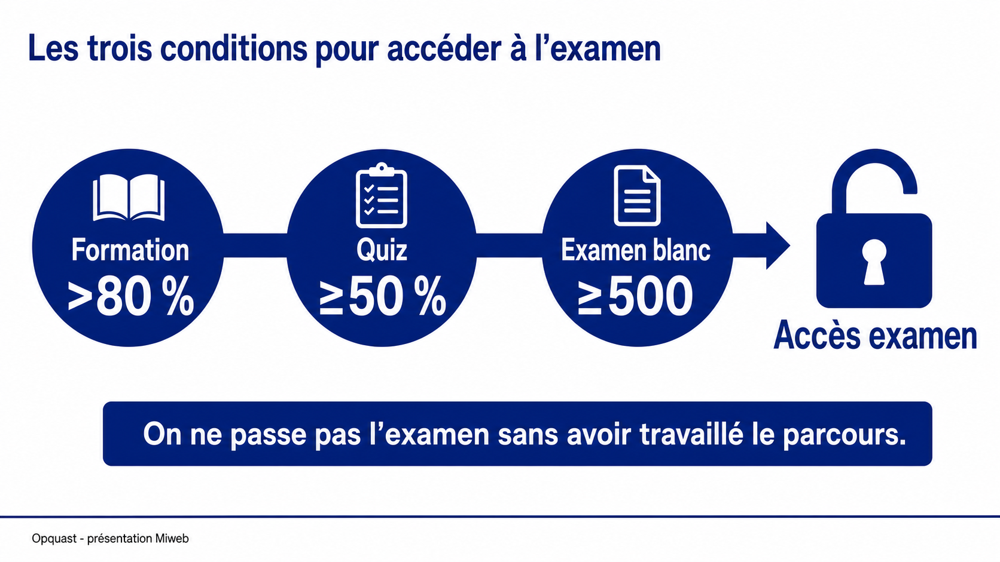
Lecture du visuel
Trois disques reliés conduisent à un cadenas ouvert. Chaque disque porte un seuil à atteindre avant l’accès à l’examen.
Les trois seuils affichés
| Élément du parcours | Seuil |
|---|---|
| Formation | >80 % |
| Quiz | ≥50 % |
| Examen blanc | ≥500 |
Ce que les trois conditions permettent
Accès examen
Message à retenir
On ne passe pas l’examen sans avoir travaillé le parcours.
L'examen ne s'ouvre pas tant que ces trois seuils ne sont pas atteints :
- avoir réalisé plus de 80 % de la formation ;
- avoir obtenu au moins 50 % à chacun des quinze quiz ;
- avoir obtenu au moins 500 points à l'un des examens blancs.
Personne ne passe l'examen sans avoir travaillé le parcours. Conséquence pratique : planifier les 14 heures, pas les improviser la veille.
Slide 42 - Le jour de l’examen
Lecture du visuel
Un bureau présente l’ordinateur, la webcam et le minuteur de l’examen. Un encart rouge signale une incertitude sur le nombre de questions.
Durée annoncée
1 h 30
Modalités et équipement
Examen en ligne avec Smowl et une webcam, sur Chrome ou Firefox.
Consigne de réponse
Répondre à tout.
Le questionnaire illustré
L’écran porte le titre « Questionnaire » et un bouton « Suivant ».
Avertissement présent sur le visuel
120 ou 125 ? - À confirmer
Message à retenir
Vérifier le nombre de questions avant diffusion.
- Durée : 1 h 30.
- Format : 120 questions à choix multiples, en ligne, depuis son propre poste.
- Pas de points négatifs : il faut répondre à tout, y compris au jugé.
- Surveillance à distance par la plateforme Smowl, webcam obligatoire.
- Navigateur Chrome ou Firefox, pas Safari.
- Pièce d'identité à portée de main.
- Les réponses s'enregistrent au fil de l'eau : une coupure ne fait pas perdre la session.
Conseil pratique : réserver 1 h 30 au calme, porte fermée, téléphone silencieux.
Slide 43 - Après l’examen
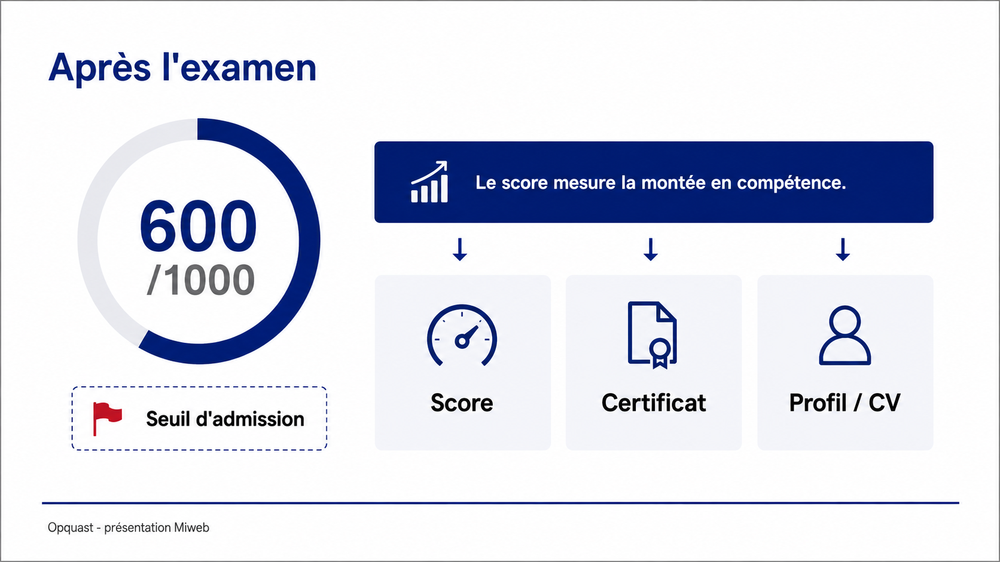
Lecture du visuel
Un anneau met en évidence le seuil d’admission. À droite, trois sorties relient la montée en compétence à ses résultats et à leur valorisation.
Seuil d’admission
600 /1000
Résultats et valorisation
Score et certificat, à valoriser dans son profil ou son CV.
Message à retenir
Le score mesure la montée en compétence.
Le seuil d'admission est de 600 points sur 1000.
Le certificat et le score arrivent par courriel. Ils peuvent être affichés sur un profil professionnel, un CV ou un portfolio.
Il n'est pas nécessaire de viser un score très élevé. L'objectif reste la montée en compétence, le score n'en est que la mesure.
Désamorcer l'angoisse de l'examen : 600 sur 1000 est un seuil de maîtrise, pas un score d'excellence.
Slide 44 - Ce que cela représente
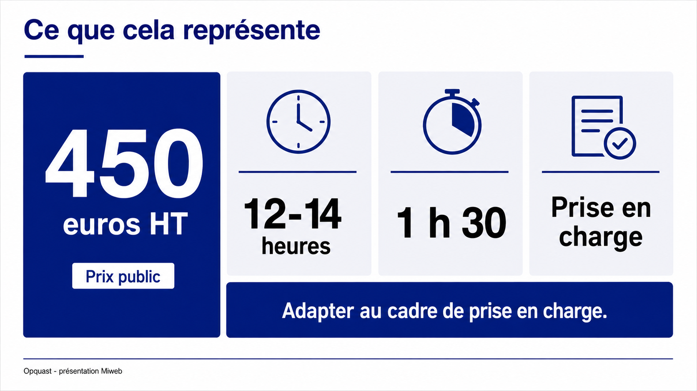
Précision du 8 septembre 2026. Le tarif public vérifié le 8 septembre 2026 est de 485 € HT. Le visuel d’origine est conservé et affiche encore 450 euros HT. Tarif et modalités sur le site officiel Opquast.
Lecture du visuel
Le visuel rapproche le prix public, les durées de formation et d’examen, puis la prise en charge. Le prix historique visible est distingué du tarif corrigé dans la précision ci-dessus.
Prix public affiché sur le visuel
450 euros HT
Investissement en temps
- Formation : 12-14 heures
- Examen : 1 h 30
Prise en charge
Adapter au cadre de prise en charge.
Message à retenir
Prévoir le temps de formation et d’examen, avec un tarif public de 485 € HT vérifié le 8 septembre 2026.
Précision du 8 septembre 2026. Le tarif public vérifié le 8 septembre 2026 est de 485 € HT. Le visuel d’origine est conservé et affiche encore 450 euros HT. Tarif et modalités sur le site officiel Opquast.
Prix public de la certification : 485 euros hors taxes (tarif vérifié le 8 septembre 2026).
Investissement en temps : 12 à 14 heures de formation, puis 1 h 30 d'examen.